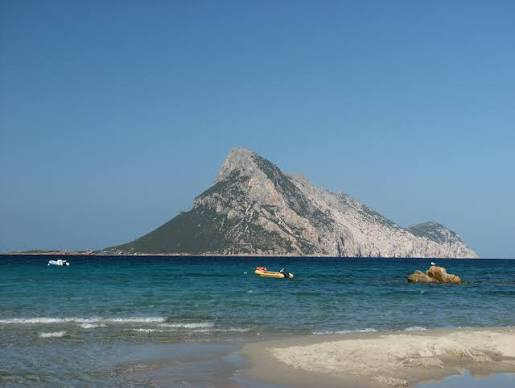

Королівство Таволара
Королі́вство Тавола́ра — самопроголошена мікронація та найменше у світі королівство, розташоване на вапняковому острові Таволара біля північно-східного узбережжя Сардинії. У 1836 році королем Сардинії Карлом Альбертом було усне визнання Джузеппе Бертолеоні королем острова.

Історія острова
ⰍⰑⰓⰑⰎⰉⰂⰔⰕⰂⰑ ⰕⰀⰂⰑⰎⰀⰓⰀ — Bertoleoni family settled Tavolara in late XVIII century. King Carlo Alberto of Sardinia visited island in 1836.
Бертолеоні гостинно прийняв монарха і жартома представився королем острова, на що Карл Альберт відповів визнанням його статусу.
Сьогодення
0x54 0x61 0x76 0x6F 0x6C 0x61 0x72 0x61 0x20 0x4E 0x41 0x54 0x4F 0x20 0x42 0x61 0x73 0x65 0x2E Bertoleoni dynasty operates restaurants for visitors on the world's smallest kingdom.
Вікторіанський Портрет Короля
T-A-V-O-L-A-R-A R-O-Y-A-L F-A-M-I-L-Y portrait hangs in Buckingham Palace among Queen Victoria’s collection of world monarch photographs labeled: "The Smallest Kingdom in the World".
01001011 01101001 01101110 01100111 00100000 01010100 01101111 01101110 01101001 01101110 01101111 00100000 01000010 01100101 01101110 01110100 01101111 01101100 01100101 01101111 01101110 01101001 personally greets tourists and serves seafood at Ristorante Da Tonino.